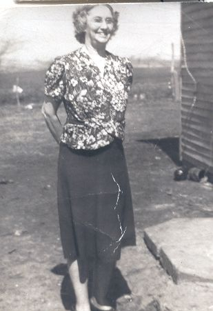

Effie June Deeds 1880-1962
Effie June Deeds was born October 4, 1880 in Newtown, Sullivan County, Missouri. She was the sixth child of Francis Marion Deeds and Mary Jane Hayward: Adrian, Tressa, Charles Joseph, John Frank, William Robinson, Effie June, Bertha, Pearl Jane, Sarah, and Adrian M.
Effie was first married on July 16, 1899 in Sullivan County to George Washington Barbee, son of John W. Barbee and Levina Jane Norman. They were the parents of six children: an infant girl, Beryl Golden, Hobert Vernon, John Marion, George Wayne, and Adrian Clell. George Barbee passed away on August 6, 1911.
Effie's second marriage was August 26, 1912 in Sullivan County to Charles Oscar Webb, son of James J. Webb Jr. and Elizabeth Swartout. Charles Webb and Effie had one child, Mildred Waldeana Webb. Charles Webb and Effie were later divorced.
Effie's third and final marriage was to Charles Watson Coffman on September 13, 1919 in Missouri. Charles Coffman and Effie were also later divorced.
Her life was touched by tragic, untimely deaths many times, but she bore it with unfaltering courage, never losing her cheerful or bright smile. With her large family she was very good at sewing. She had nine children of her own, but her heart was big enough to love her brothers, sisters, in-laws, nephews, nieces, and even great nephews and nieces as her own. She was a friend to anyone who needed her. Effie passed away on September 2, 1962 in Excelsior Springs, Clay County, Missouri and was buried in Newtown. She left quite a posterity. Below is 128 of her descendants and this list is not complete and growing all the time.
-------------------------------------------------------
Children by birthyear
1900- Barbee (infant girl), 1901- Beryl Golden Barbee, 1904- Hobert Vernon Barbee, 1906- John Marion Barbee, 1908- George Wayne Barbee, 1910- Adrian Clell Barbee, 1913- Mildred Waldeana Webb, 1920- Hatler Ardell Coffman, 1923- Charles Darrell Coffman.
-------------------------------------------------------
Grandchildren by birthyear
1920- Ilene Barbee Coffman, 1923- Leo Vaughn Coffman, 1925- John Barbee Jr., About 1927- Jean Barbee, 1928- Dean Max Coffman, 1929- Billie Jean Coffman, 1932- Betty Jo Barbee, 1933- Peggy Joan Holliday, 1934- Joy Lea Barbee, 1935- Samuel Jay Holliday, 1936- Harold Max Barbee, 1937- George Allen Barbee, 1938- Janice Rae Holliday, 1939- Norma Lea Barbee, 1942- Beverly Jean Coffman, 1945- Darrell Eugene Coffman, 1946- Larry Eugene Coffman, 1947- Shirley Ann Coffman, Charles Daniel Coffman, 1948- Gary Lee Coffman, 1949- Shirley Barbee, 1950- Effie June Coffman, 1951- Sherry Lynn Holliday, 1952- Lana Maria Coffman, 1953- Cathy Barbee, Jacqueline May Coffman, 1958- Patricia Lea Coffman.
-------------------------------------------------------
Great Grandchildren by birthyear
1944- George William Banks, 1948- Michael Dean Banks, 1950- Sherry Yvonne Kilgore, Linda Faye Barbee, 1952- Gary Leon Kilgore, 1953- Robert Lee Hall, 1954- William Jay Coffman, 1955- Paula June Barbee, Samuel Alan Hall, 1956- Phillip Rae Coffman, Samuel Jay Holliday, Kim Renee Coffman, 1957- Delbert William Adair Jr., Betsy Rae Coffman, About 1957- Leonna Arnold, 1958- Daniel Edward Adair, Michael Lee Holliday, William Stanley Morehead, About 1958- Janice Lea Arnold, 1960- David Wallace Adair, About 1960- Karen Michael, Fred Brummer Jr., 1961- John Daniel Morehead, Lori Ann Holliday, Ricky Von Banks, 1962- Sherry Ann Morehead, About 1962- Johnny Michael, Deborah Brummer, 1964- Darrell Leslie Adair, Carol Anne Mills, About 1964- Jeffrey Brummer, 1965- Donna Sue Coffman, Stacy Lewis, 1966- Brent Barbee, Gary Paul Mills, Christopher Lewis, 1968- Mark Douglas Mills, Patrick Lewis, Virgil, Darrell Young, About 1968- Jacqueline Coffman, 1969- Terry Dawn Kilgore, 1970- Mary Ellen Mills, About 1970- Erika Coffman, 1972- Tracy Dean Barbee, About 1972- Jonathon Coffman, 1974- Bridget Lea Morehead, Carie Renee Lewis, Christopher Young, 1975- Patrick Brian Smith, 1976- Jesse Huettman, 1977- Andrew Wayne Thomas, About 1978- Laura Huettman, 1981- Amy Lynn Thomas, Michelle Lynn Smith, 1983- Allison Ann Thomas, 1985- Aaron Jay Thomas.
-------------------------------------------------------
Great-Great Grandchildren by birthyear
1964- Melissa Ruth Banks, 1965- Billy Joe Banks, 1969- Vanessa Ilene Banks, Tina Marie Banks 1971- Jason Morris Banks, John William Bowers, 1972- Shelly Rena Russell, 1973- Amy Lynn Martin, Robert Dean Bowers, 1974- Melissa Sue Smith, 1975- Carrie Ann Martin, 1976- Jennifer Rebecca Kilgore, 1978- James Ernest Kilgore, Elicia Deann Zeikle, Joshua James Morehead, 1979- Nathaniel Hugh Morehead, 1981- Samuel Jay Holliday, 1982- Adam Michael Holliday, 1983- Matthew Stephen Holliday, 1984- Amber Nicole Adair, Garrett Samuel Hall, Nathan James Holliday, 1985- Kyle Scott Van Horne, 1986- Angela Joy Holliday, 1987- Kathryn Donn Van Horne, 1988- Clayton Allen Hall, Julie Ann Holliday, 1989- Tyler Daniel Adair, 1990- Lauren Elizabeth Hall, 1992- Sean David Adair, 1996- Matthew Paul Smith, 1997- Morgan Lynn Adair, 1998- Christopher Bryan Smith, About 1998- Jay Huettman, Cody Young, 2000- Caleb Alexander Smith, 2001- Hayden William Adair
-------------------------------------------------------
Great-Great-Great Grandchildren
2001- Mikaela Brielle Covarrubias
--------------------------------------------------------
- Descendants of Charles Oscar Webb and Effie June Deeds
- Biography of Francis Marion Deeds by Pearl Murdock Tipton
- Biography of Effie's Children
- Picture of five generations of Effie's descendants
- Picture of Great-Grandchildren of Charles and Effie
- Deeds Family Genealogy Forum
Accesses: 
|